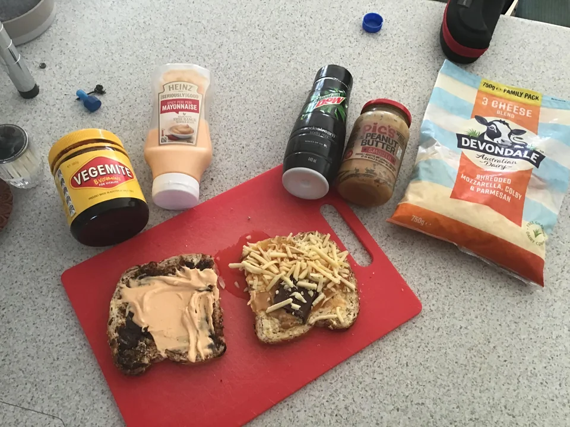

???

A ??? is one of my family's fix-it-quick favorites. They are really delicious and easy to make. I like to
serve them with big bowls of steaming vegetable soup and dill pickles on the side.
Ingredients
- 1 tbsp. Vegemite
- 5 tbsps. Heinz Spicy Peri Peri Mayonaisse
- 1 cup Mountain Dew Sodastream Soda Mix
- 1 cup Pic's Peanut Butter
- 3 cups Devondale 3 Cheese Blend
Steps
- Put them all together
- Serve, reflect on what you did and enjoy!
Back